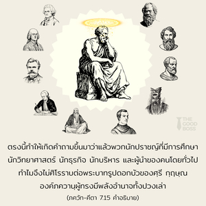
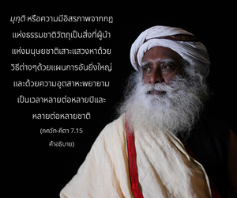

พวกที่โง่เขลามาก ต่ำสุดในหมู่มนุษย์ ถูกความหลงขโมยเอาความรู้ไป และเป็นผู้มีส่วนร่วมกับธรรมชาติมารที่ไม่เชื่อในองค์ภควานจะไม่ศิโรราบต่อข้า



ได้กล่าวไว้ใน ภควัท-คีตา ว่าเพียงแต่ศิโรราบตนเองต่อพระบาทรูปดอกบัวขององค์ภควานฺ กฺฤษฺณเราจะสามารถข้ามพ้นกฎเกณฑ์อันเข้มงวดของธรรมชาติวัตถุได้ ตรงนี้ทำให้เกิดคำถามขึ้นมาว่าแล้วพวกนักปราชญ์ที่มีการศึกษา นักวิทยาศาสตร์ นักธุรกิจ นักบริหาร และผู้นำของคนโดยทั่วไปทำไมจึงไม่ศิโรราบต่อพระบาทรูปดอกบัวของ ศฺรีกฺฤษฺณ องค์ภควานฺผู้ทรงมีพลังอำนาจทั้งปวงเล่า มุกฺติ หรือความมีอิสรภาพจากกฎแห่งธรรมชาติวัตถุ เป็นสิ่งที่ผู้นำแห่งมนุษยชาติเสาะแสวงหาด้วยวิธีต่างๆ ด้วยแผนการอันยิ่งใหญ่ และด้วยความอุตสาหะพยายามเป็นเวลาหลายต่อหลายปี และหลายต่อหลายชาติ หากว่าความมีอิสรภาพหลุดพ้นเป็นไปได้ด้วยเพียง แต่ศิโรราบต่อพระบาทรูปดอกบัวขององค์ภควานฺ แล้วทำไมผู้นำที่มีสติปัญญา และทำงานหนักเหล่านี้ไม่ยอมรับวิธีปฏิบัติที่ง่ายดายเช่นนี้
คีตา ตอบคำถามนี้อย่างเปิดเผยว่าผู้นำสังคมที่มีความรู้จริง เช่น พระพรหม, พระศิวะ, กปิล, สี่กุมาร, มนุ, วฺยาส, เทวล, อสิต, ชนก, ปฺรหฺลาท, พลิ,และต่อมามธฺวาจารฺย, รามานุชาจารฺย, ศฺรี ไจตนฺย และผู้อื่นอีกมากมายที่เป็นนักปราชญ์ นักการเมือง นักวิชาการ นักวิทยาศาสตร์ ฯลฯ ที่มีความซื่อสัตย์จะศิโรราบต่อพระบาทรูปดอกบัวขององค์ภควานฺ ผู้ทรงมีอำนาจทั้งปวงที่เชื่อถือได้ พวกที่ไม่ใช่นักปราชญ์ นักวิทยาศาสตร์ นักวิชาการ และนักบริหาร ฯลฯ ที่แท้จริงแต่อวดอ้างตนเองว่าเป็นบุคคลเหล่านี้เพื่อผลประโยชน์ทางวัตถุ จะไม่ยอมรับแผน หรือวิธีขององค์ภควานฺ พวกเขาไม่มีความคิดเกี่ยวกับองค์ภควานฺเพียงแต่ผลิตแผนการทางโลกของตนเอง และต่อมาก็สับสนอยู่กับปัญหาความเป็นอยู่ทางวัตถุ ในความพยายามที่จะแก้ปัญหา และไม่ประสบความสำเร็จเพราะว่าพลังงาน (ธรรมชาติ) วัตถุมีพลังอำนาจมากสามารถต้านแผนที่เชื่อถือไม่ได้ของผู้ที่ไม่เชื่อในองค์ภควานฺ และปิดกั้นความรู้ของ “คณะกรรมการวางแผน”
นักวางแผนผู้ไม่เชื่อในองค์ภควานฺอธิบายไว้ ณ ที่นี้ด้วยคำ ทุษฺกฺฤตินห์ หรือ “คนสารเลว” กฺฤตี หมายความถึงผู้ทำงานการกุศล นักวางแผนผู้ไม่เชื่อในองค์ภควานฺ บางครั้งมีความฉลาดมาก และมีใจกุศลเช่นกันเพราะว่าแผนงานใหญ่ใดๆ ไม่ว่าจะดีหรือเลวต้องใช้ปัญญาในการปฏิบัติ แต่เนื่องจากสมองของผู้ไม่เชื่อในองค์ภควานฺได้ถูกใช้ไปอย่างไม่เหมาะสมในการต่อต้านแผนของพระองค์ นักวางแผนผู้ไม่เชื่อในองค์ภควานฺจึงถูกเรียกว่า ทุษฺกฺฤตี ซึ่งแสดงว่าปัญญา และความพยายามถูกนำไปในทางที่ผิด
ใน คีตา ได้กล่าวไว้อย่างชัดเจนว่าพลังงานวัตถุดำเนินไปภายใต้คำสั่งขององค์ภควานฺอย่างสมบูรณ์ โดยไม่มีอำนาจที่เป็นอิสระจึงดำเนินไปเหมือนเงาที่เคลื่อนตามการเคลื่อนไหวของตัวจริง ถึงกระนั้น พลังงานวัตถุก็มีพลังอำนาจมาก และผู้ไม่เชื่อในองค์ภควานฺอันเนื่องมาจากอารมณ์ที่เห็นว่าไม่มีองค์ภควานฺจึงไม่สามารถรู้ว่ามันดำเนินไปอย่างไร และไม่สามารถรู้ถึงแผนของพระองค์ ภายใต้ความหลง และภายใต้ระดับตัณหา และอวิชชาแผนของเขาทั้งหมดจึงล้มเหลว ดังเช่นกรณีของ หิรณฺยกศิปุ และ ราวณ ที่แผนการถูกทำลายเป็นผุยผงถึงแม้ว่าทั้งสองเป็นผู้ที่มีความรู้ทางวัตถุสูง เหมือนกับนักวิทยาศาสตร์ นักปราชญ์ นักบริหาร และนักวิชาการ ทุษฺกฺฤติน หรือคนสารเลวเหล่านี้มีอยู่สี่รูปแบบดังจะอธิบายต่อไปนี้
(1) มูฒ คือ พวกที่โง่มากเหมือนกับสัตว์เดรัจฉานที่แบกภาระทำงานหนัก พวกนี้ต้องการหาความสุขกับผลจากแรงงานของตน ดังนั้น จึงไม่ต้องการมีส่วนร่วมกับพระองค์ ตัวอย่างที่เห็นกันอยู่ทั่วไปของสัตว์ที่แบกภาระหนัก คือ ลา สัตว์ผู้ถ่อมตนตัวนี้ถูกเจ้านายใช้งานอย่างหนักมาก เจ้าลาไม่รู้อย่างแท้จริงว่าตัวมันทำงานหนักทั้งวันทั้งคืนเพื่อใคร มันรู้สึกอิ่มใจจากการได้หญ้ามาหนึ่งกำที่ป้อนลงไปในท้อง นอนสักพักหนึ่งภายใต้ความกลัวที่จะถูกเจ้านายเฆี่ยน และพอใจกับเพศสัมพันธ์ภายใต้ความเสี่ยงที่จะถูกเพศตรงข้ามเตะซ้ำแล้วซ้ำอีก บางครั้งเจ้าลาร้องเพลงเป็นบทกวี และปรัชญาเสียงโอดครวญเช่นนี้ได้แต่รบกวนผู้อื่นเท่านั้น นี่คือตัวอย่างของคนโง่ที่ทำงานเพื่อผลประโยชน์ส่วนตัว โดยไม่รู้ว่าควรทำงานเพื่อใคร และไม่รู้ว่า กรฺม (กรรม) ทำไปเพื่อ ยชฺญ (การบูชา)
พวกที่ทำงานหนักทั้งวันทั้งคืนเพื่อสะสางภาระหน้าที่ที่ตนเองสร้างขึ้นมา จะกล่าวว่าไม่มีเวลามาสดับฟังเกี่ยวกับความเป็นอมตะของสิ่งมีชีวิต สำหรับพวก มูฒ ผลประโยชน์ทางวัตถุซึ่งในที่สุดจะสูญสลายเป็นทุกสิ่งทุกอย่างในชีวิต ถึงแม้ว่าพวก มูฒ ได้รับความสุขน้อยมากจากผลแห่งแรงงานของตน บางครั้งพวกนี้อดหลับอดนอนทั้งวันทั้งคืนเพื่อผลกำไร แม้จะเป็นโรคกระเพาะ หรือท้องอืดเฟ้อก็ยังพึงพอใจกับการที่ไม่รับประทานอาหาร และได้แต่ซึมซาบอยู่กับการทำงานทั้งวันทั้งคืนเพื่อประโยชน์ของพวกเจ้านายที่ลวงตา อยู่ในอวิชชาเกี่ยวกับเจ้านายที่แท้จริงของตนเอง คนงานหน้าโง่เหล่านี้เสียเวลาอันมีค่าไปรับใช้ทรัพย์ศฤงคาร (ทรัพย์อันเป็นที่รักที่ชอบ) ด้วยความอับโชคจึงไม่เคยศิโรราบต่อเจ้านายสูงสุดของเจ้านายทั้งหลาย และไม่เคยให้เวลาในการสดับฟังเกี่ยวกับองค์ภควานฺจากแหล่งที่ถูกต้อง สุกรที่กินอุจจาระจะไม่ใยดีที่จะยอมรับอาหารอันหวานฉ่ำที่ทำจากน้ำตาล และเนย ในทำนองเดียวกัน กรรมกรผู้โง่เขลาจะฟังข่าวเพื่อความสุขทางประสาทสัมผัสแห่งโลกวัตถุต่อไปโดยไม่รู้จักเบื่อ แต่มีเวลาเพียงเล็กน้อยเพื่อสดับฟังเกี่ยวกับสิ่งมีชีวิตอมตะที่เป็นผู้เคลื่อนไหวโลกวัตถุ
(2) ทุษฺกฺฤตี หรือคนสารเลวอีกระดับหนึ่งเรียกว่า นราธม หรือต่ำสุดของมนุษยชาติ นร แปลว่ามนุษย์และ อธม แปลว่าต่ำสุด จาก 8,400,000 เผ่าพันธุ์ของสิ่งมีชีวิต มีอยู่ 400,000 ที่เป็นเผ่าพันธุ์มนุษย์ จากนี้มีรูปแบบที่ต่ำกว่าชีวิตมนุษย์มากมาย ซึ่งส่วนใหญ่ไม่เจริญ มุนษย์ที่เจริญแล้วเป็นพวกที่มีหลักศีลธรรมของสังคมการเมือง และชีวิตทางศาสนา พวกที่พัฒนาทางสังคม และการเมืองแต่ไม่มีหลักศาสนาต้องพิจารณาว่าเป็น นราธม หรือว่าศาสนาที่ไม่มีองค์ภควานฺ เพราะว่าจุดมุ่งหมายในการปฏิบัติตามหลักธรรมของศาสนาก็เพื่อให้รู้ถึงสัจธรรมสูงสุด และความสัมพันธ์ระหว่างมนุษย์กับพระองค์ ใน คีตา องค์ภควานฺทรงกล่าวไว้อย่างชัดเจนว่า ไม่มีผู้ที่มีอำนาจเชื่อถือได้ผู้ใดที่เหนือไปกว่าพระองค์ องค์ภควานฺ คือ สัจธรรมสูงสุด รูปลักษณ์ที่เจริญแล้วของชีวิตมนุษย์มีไว้เพื่อฟื้นฟูจิตสำนึกที่สูญหายไปของมนุษย์ในความสัมพันธ์นิรันดรกับสัจธรรมสูงสุด องค์ภควานฺ ศฺรีกฺฤษฺณ ผู้ทรงมีพลังอำนาจทั้งปวง ผู้ใดที่สูญเสียโอกาสนี้จัดอยู่ในจำพวก นราธม เราได้ข้อมูลจากพระคัมภีร์ที่เปิดเผยว่าเมื่อทารกน้อยอยู่ในครรภ์มารดา (สภาวะที่อึดอัดมาก) เขาจะสวดมนต์ภาวนาต่อองค์ภควานฺ เพื่อช่วยจัดส่งให้ออกมา และสัญญาว่าทันทีที่ออกมาจะบูชาแต่พระองค์เท่านั้น การสวดมนต์ภาวนาถึงองค์ภควานฺเมื่ออยู่ในสภาวะคับขันเป็นสัญชาตญาณธรรมชาติของทุกๆ ชีวิต เพราะมีความสัมพันธ์นิรันดรกับพระองค์ แต่หลังจากคลอดออกมาแล้วเด็กคนนี้ก็ลืมความยากลำบากแห่งการเกิด และลืมทั้งผู้คลอด เนื่องด้วยอิทธิพลของ มายา หรือพลังแห่งความหลง
เป็นหน้าที่ของผู้ดูแลเด็กที่จะฟื้นฟูจิตสำนึกแห่งองค์ภควานฺที่มีอยู่ลึกๆ ภายในตัวเขา พิธีปฏิรูปสิบวิธีที่ได้กล่าวไว้ใน มนุ-สฺมฺฤติ เป็นแนวทางหลักศาสนาเพื่อฟื้นจิตสำนึกแห่งองค์ภควานฺในระบบของ วรฺณาศฺรม อย่างไรก็ดี ไม่มีวิธีใดที่ปฏิบัติตามกันอย่างเคร่งครัดไม่ว่าส่วนไหนของโลกในปัจจุบันนี้ ดังนั้น 99.9 เปอร์เซ็นต์ของประชากรเป็น นราธม
เมื่อประชากรทั้งหมดเป็น นราธม โดยธรรมชาติสิ่งที่เรียกว่าการศึกษาของพวกเขาทั้งหมดเป็นโมฆะ ด้วยพลังงานที่มีอำนาจทั้งหมดของธรรมชาติวัตถุ ตามมาตรฐานของ คีตา ผู้ที่มีความรู้คือผู้ที่เห็นด้วยความเสมอภาคไม่ว่าจะเป็น พฺราหฺมณ ผู้คงแก่เรียน สุนัข วัว ช้าง และคนกินสุนัข นั่นคือวิสัยทัศน์ของสาวกที่แท้จริง ศฺรี นิตฺยานนฺท ปฺรภุ ผู้ทรงเป็นอวตารขององค์ภควานฺในรูปของพระอาจารย์ทิพย์ ทรงจัดส่ง นราธม ตัวอย่าง คือ สองพี่น้อง ชคาอิ และ มาธาอิ และทรงแสดงให้เห็นถึงพระเมตตาที่แท้จริงของสาวกที่มีต่อผู้ที่ต่ำสุดแห่งมนุษยชาติ ดังนั้น นราธม ที่ถูกองค์ภควานฺลงโทษสามารถฟื้นฟูจิตสำนึกทิพย์ของตนขึ้นอีกครั้งหนึ่งด้วยพระเมตตาของสาวกเท่านั้น
ในการเผยแพร่ ภาควต-ธรฺม หรือกิจกรรมของสาวก ศฺรี ไจตนฺย มหาปฺรภุ ทรงแนะนำให้ผู้คนสดับฟังสาส์นขององค์ภควานฺอย่างยอมจำนน เนื้อหาสาระของสาส์นนี้คือ ภควัท-คีตา ผู้ต่ำสุดในหมู่มนุษย์สามารถได้รับการจัดส่งด้วยวิธีการสดับฟังแบบยอมจำนนเท่านั้น แต่โชคร้ายที่พวกเขายังปฏิเสธในการรับฟังสาส์นเหล่านี้จึงไม่ต้องพูดถึงการศิโรราบต่อความปรารถนาขององค์ภควานฺ นราธม หรือผู้ต่ำสุดแห่งมนุษยชาติจะปฏิเสธอย่างเต็มที่เกี่ยวกับหน้าที่ที่สำคัญของมนุษย์
(3) ทุษฺกฺฤตี ระดับต่อไปเรียกว่า มายยาปหฺฤต-ชฺญานาห์ หรือพวกที่ความรู้อันสูงส่งของพวกเขาใช้ประโยชน์ไม่ได้ด้วยอิทธิพลของพลังงานแห่งความหลงทางวัตถุ พวกนี้ส่วนใหญ่เป็นผู้มีความรู้มาก เช่น นักปราชญ์ นักกวี บัณฑิต นักวิทยาศาสตร์ผู้ยิ่งใหญ่ทั้งหลาย ฯลฯ แต่ถูกพลังงานแห่งความหลงนำไปในทางที่ผิด ดังนั้นพวกเขาจึงไม่เชื่อฟังองค์ภควานฺ
มี มายยาปหฺฤต-ชฺญานาห์ จำนวนมากในปัจจุบันแม้ในหมู่นักวิชาการแห่ง ภควัท-คีตา เอง ได้กล่าวไว้ใน คีตา ด้วยภาษาที่เรียบง่ายว่า ศฺรีกฺฤษฺณ คือ องค์ภควานฺ ไม่มีผู้ใดเทียบเท่าหรือยิ่งใหญ่ไปกว่าพระองค์ ทรงเป็นพระบิดาของพระพรหมผู้ที่เป็นพระบิดาองค์แรกของมนุษย์ทั้งหลาย อันที่จริงได้กล่าวไว้ว่า ศฺรีกฺฤษฺณ ทรงไม่ใช่เป็นเพียงพระบิดาของพระพรหมเท่านั้น แต่ยังเป็นพระบิดาของเผ่าพันธุ์ชีวิตทั้งหมด ทรงเป็นรากของ พฺรหฺมนฺ อันไร้รูปลักษณ์และ ปรมาตฺมา หรืออภิวิญญาณในทุกๆ ชีวิตซึ่งเป็นส่วนที่แบ่งแยกออกมาจากพระองค์ พระองค์ทรงเป็นแหล่งกำเนิดของทุกสิ่งทุกอย่าง และได้แนะนำไว้ว่าทุกคนควรศิโรราบต่อพระบาทรูปดอกบัวขององค์กฺฤษฺณ ถึงแม้จะมีข้อความที่ชัดเจนทั้งหมดนี้แต่พวก มายยาปหฺฤต-ชฺญานาห์ ยังเย้ยหยันบุคลิกภาพแห่งองค์ภควานฺ และพิจารณาว่าพระองค์ทรงเป็นเพียงมนุษย์อีกคนหนึ่งเท่านั้น โดยไม่รู้ว่ารูปร่างมนุษย์ที่ได้รับพรมานี้ออกแบบมาจากรูปร่างลักษณะทิพย์อันเป็นอมตะขององค์ภควานฺ
การตีความที่เชื่อถือไม่ได้ทั้งหลายของ คีตา โดยกลุ่ม มายยาปหฺฤต-ชฺญานาห์ ซึ่งอยู่นอกบทบัญญัติของระบบ ปรมฺปรา จะเป็นอุปสรรคมากบนหนทางแห่งความเข้าใจในวิถีทิพย์ ผู้ตีความที่อยู่ในความหลงจะไม่ศิโรราบต่อพระบาทรูปดอกบัวของศฺรี กฺฤษฺณ และพวกเขาจะไม่สอนผู้อื่นให้ปฏิบัติตามหลักธรรมนี้
(4) ทุษฺกฺฤตี ระดับสุดท้ายเรียกว่า อาสุรํ ภาวมฺ อาศฺริตาห์ หรือพวกที่มีหลักอธรรม หรือหลักมาร พวกนี้ไม่เชื่อในองค์ภควานฺอย่างเปิดเผย บางคนเถียงว่าองค์ภควานฺไม่สามารถเสด็จลงมาโลกวัตถุนี้ได้ แต่ก็ไม่สามารถให้เหตุผลอย่างเป็นรูปธรรมว่าทำไมจึงเป็นเช่นนั้น และมีบางคนคิดว่าพระองค์ทรงด้อยกว่าลักษณะที่ไร้รูปลักษณ์ ถึงแม้ได้ประกาศไว้ใน คีตา อย่างตรงกันข้ามด้วยความอิจฉาบุคลิกภาพสูงสุดแห่งพระเจ้า ผู้ไม่เชื่อองค์ภควานฺจะเสนออวตารตัวปลอมจำนวนมากมายที่ผลิตขึ้นในโรงงานสมองของตนเอง บุคคลเหล่านี้ที่หลักการของชีวิตชอบประณามองค์ภควานฺ และไม่ศิโรราบต่อพระบาทรูปดอกบัวของศฺรีกฺฤษฺณ
ศฺรี ยามุนาจารฺย อาลพนฺทรุ แห่งอินเดียตอนใต้กล่าวว่า “โอ้องค์ภควานฺของข้า บุคคลที่ไปยุ่งเกี่ยวกับหลักการของพวกไม่เชื่อในองค์ภควานฺไม่สามารถรู้ถึงพระองค์แม้คุณสมบัติ รูปลักษณ์ และกิจกรรมอันไม่ธรรมดาของพระองค์ ถึงแม้ว่าบุคลิกภาพของพระองค์ได้รับการยืนยันไว้โดยพระคัมภีร์ที่เปิดเผยทั้งหลายในคุณลักษณะแห่งความดี ถึงแม้เป็นที่ยอมรับโดยผู้มีอำนาจเชื่อถือได้ที่มีชื่อเสียงโด่งดังในความรู้แห่งศาสตร์ทิพย์อันลึกซึ้งและสถิตอยู่ในคุณสมบัติแห่งเทพ”
ฉะนั้น (1) บุคคลที่โง่มาก (2) ผู้ต่ำสุดในหมู่มนุษย์ (3) นักคาดคะเนที่อยู่ในความหลง และ (4) ผู้ประกาศว่าตนเองไม่เชื่อในองค์ภควานฺที่ได้กล่าวมาข้างต้นนี้จะไม่มีวันศิโรราบต่อพระบาทรูปดอกบัวขององค์ภควานฺ แม้จะได้รับการแนะนำจากพระคัมภีร์ และผู้ที่เชื่อถือได้ทั้งหลายก็ตาม